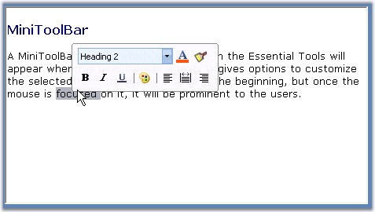

Essential Tools comes with MiniToolBar control with similar look and feel of MS Office 2007. It appears when the user selects and right clicks on the text. It gives options to customize the selected text. It will look blurred in the beginning, but once the mouse is focussed on it, it will be prominent to the users.
 Note: MiniToolBar control uses a
ToolStripPanelItem to hold its options.
Note: MiniToolBar control uses a
ToolStripPanelItem to hold its options.

Figure 1392: MiniToolBar Displayed on a RichTextBox
See Also
Through Designer, Through Code
 Color Schemes in MiniToolBar
Color Schemes in MiniToolBar